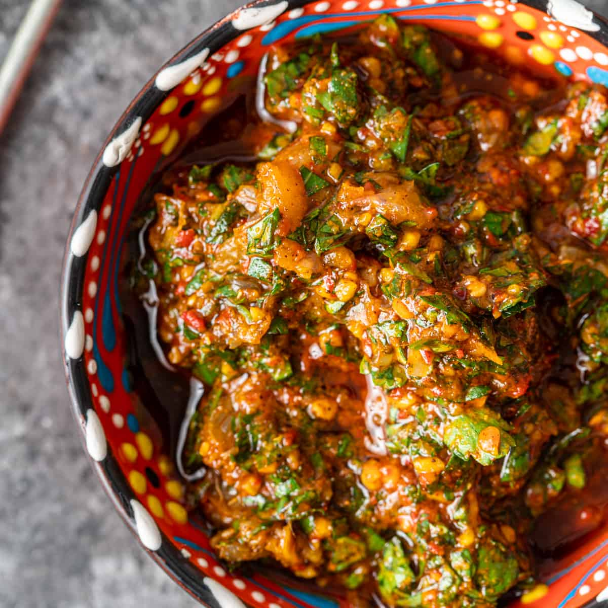
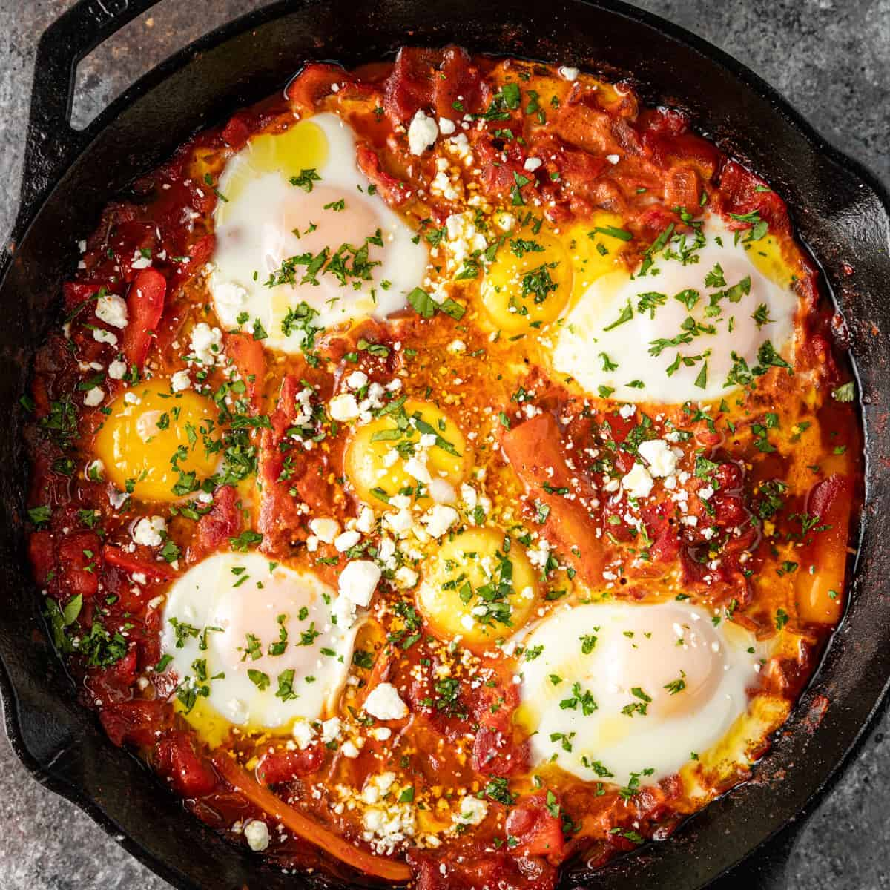

Chermoula (Relish)
A popular North African herbal relish made with bundles of herbs, preserved lemons, garlic, and tantalizing spices.
View RecipeNorth African cuisine, often referred to as Maghrebi cuisine, is a rich culinary tapestry woven from centuries of history. Influenced by Berber, Arab, Mediterranean, and Andalusian cultures, the food of this region is famous for its bold, earthy flavors and vibrant colors. It heavily features complex spice blends like Ras el Hanout, alongside staples such as couscous, slow-cooked tagines, and fiery harissa.

A popular North African herbal relish made with bundles of herbs, preserved lemons, garlic, and tantalizing spices.
View Recipe
Succulent beef and tender vegetables are slow-cooked to perfection with an all-star blend of aromatic herbs and spices.
View Recipe
A hearty breakfast dish featuring a diverse blend of North African spices, fresh vegetables, and eggs poached directly in a bold, savory tomato sauce.
View RecipeRas el Hanout is a complex North African spice blend. Build your custom blend below to see its heat profile!
Select spices and click "Mix" to see your result.
Heat Level: 0/10
Explore more about our project or get in touch with our team.